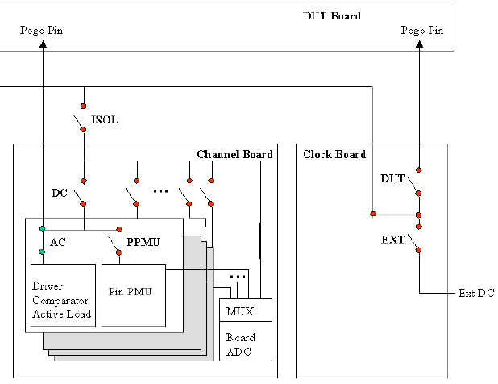

Availability and Relay Matrix of PMUs
The Per-Pin PMU is provided once per digital channel. It can be used in all DC tests that use the PMU to perform measurements., and is fully accessible via firmware commands.
The relay matrix (after Standard Connect) is shown in the figure below.
The Pin PMU is connected to a DUT pin by closing the corresponding PPMU relay.
The drawing below illustrates a Smart Scale system, the EXA Scale system has no clock board.

Functional changes
- Introduced before SmarTest 6.3.2